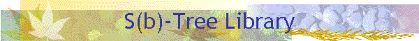

Home | PSI RAS | RCIS | S-Tree Lib

|
 Home | PSI RAS | RCIS | S-Tree Lib
|
|
An External Dynamic Dictionary is implemented based on a new type of Balanced Trees intended to provide high packing of variable length keys, and fast access to the data. For the S(b)-tree basic concepts overview, the library interface, and the implementation details please visit the following pages. Contents
Copyright (C) 1997 Konstantin V. Shvachko. |
|
Konstantin Shvachko |